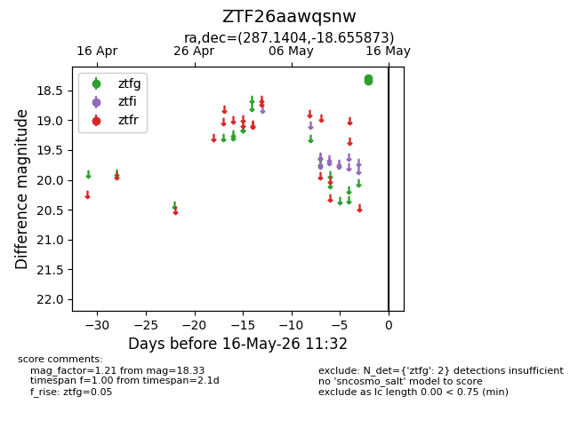
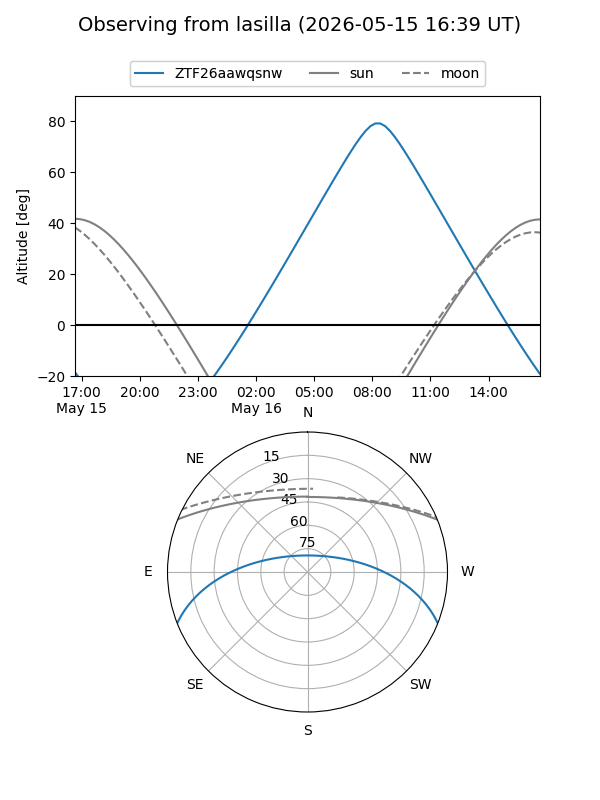
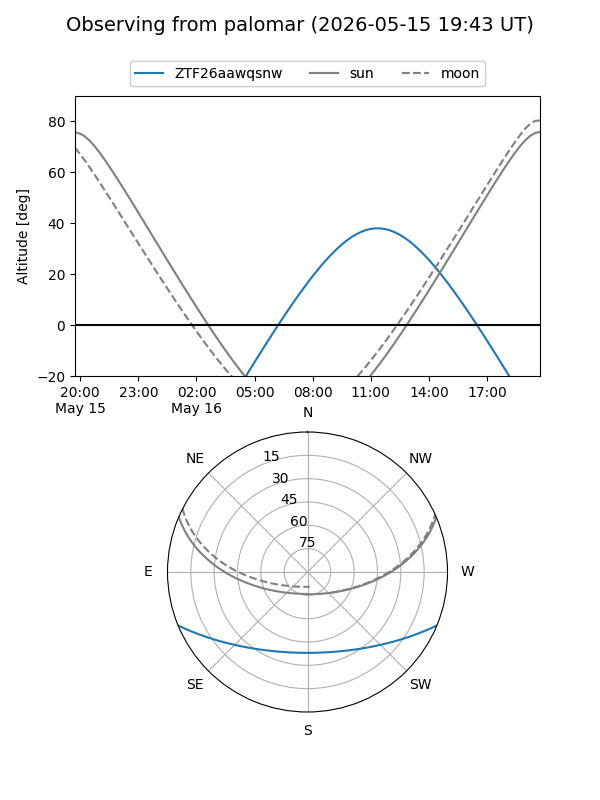

ZTF26aawqsnw
Target ZTF26aawqsnw at 2026-05-16 11:34
Aliases and brokers:
FINK: link
Lasair: link
ALeRCE: link
alt names
ZTF26aawqsnw (ztf,fink_ztf)
Coordinates:
equatorial (ra, dec) = 287.1404,-18.65587
equatorial (HMS+DMS) = 19:08:33.70,-18:39:21.14
galactic (l, b) = (17.9726,-12.05239)
Flags:
Photometry:
last ztfg=18.33
2 ztfg detections
Lightcurve

Visibility


Additional plots